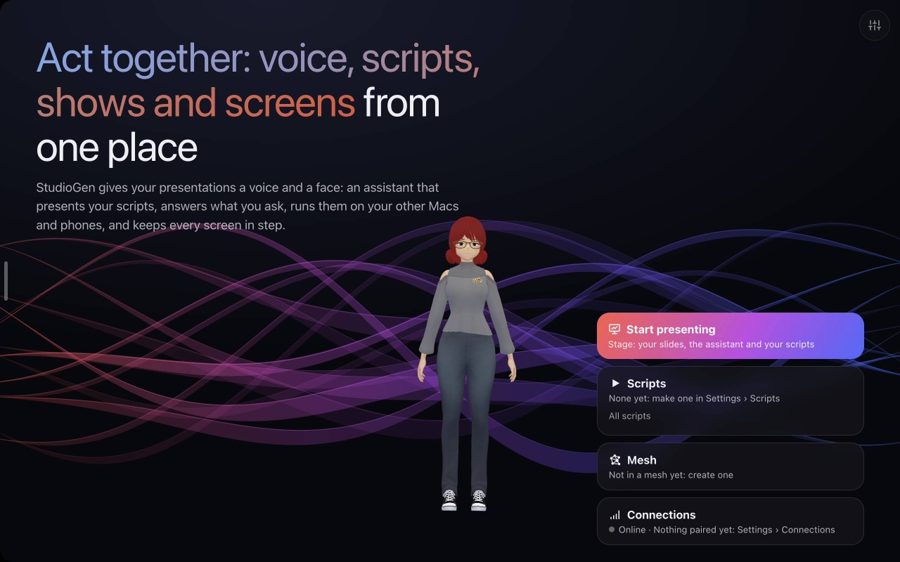
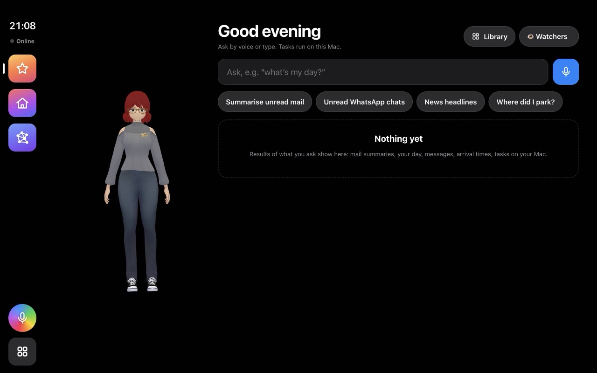
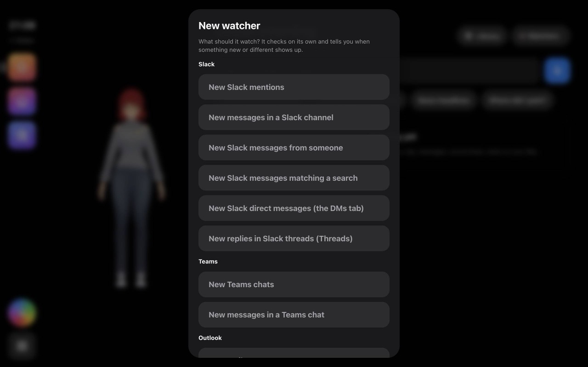
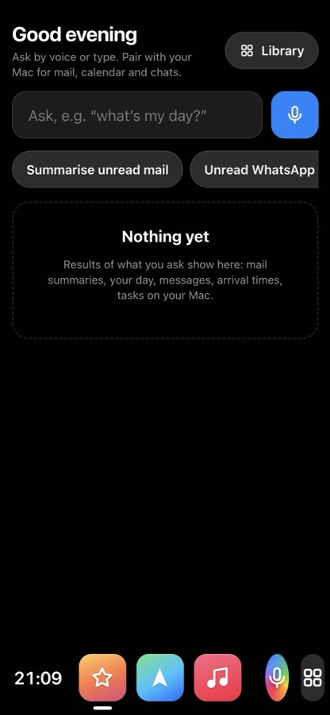
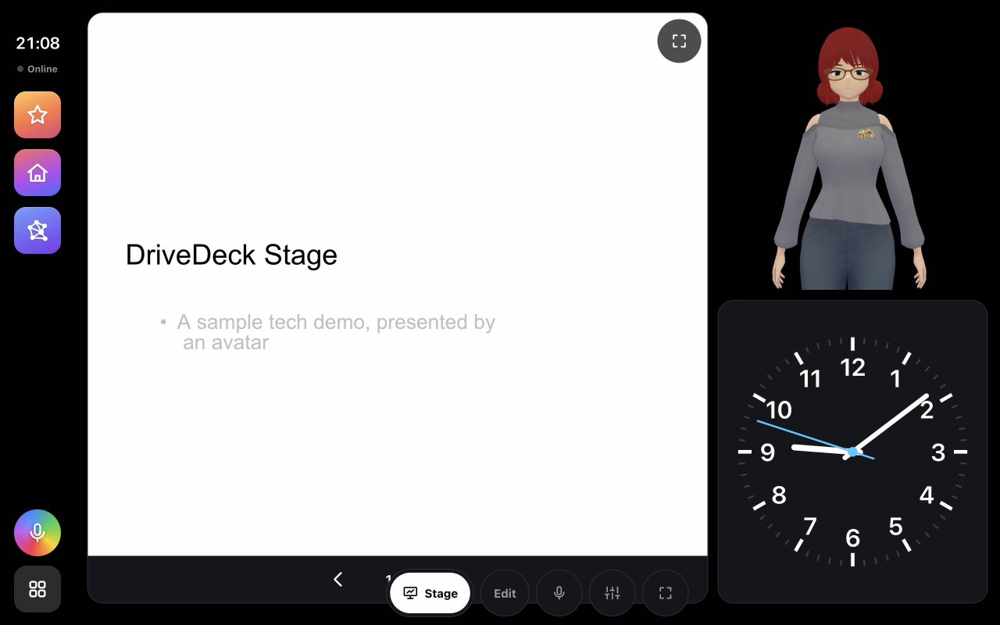

StudioGen runs on your Mac. DriveGen runs on your iPhone or iPad. Each one sets itself up the first time you open it.
Download the latest StudioGen DMG and drag it to Applications. The first time, right-click it and choose Open, because Apple hasn't notarised it. After that it updates itself.
In Safari, open vchahalibm.github.io/CarPWA. Tap Share › Add to Home Screen, then open DriveGen from the Home Screen.
A checklist fills in by itself: the voice, listening, the camera and the assistant, and on the Mac the language model, which runs on the Mac itself. Tap Start whenever you like; downloads carry on.

Say it or type it. Tasks run on your Mac, and watchers tell you when something new happens.
Tap the mic, or type into the Ask box. Answers come back as cards.
what's my day?
summarise unread mail
what's the weather
👁 Watchers › + New watcher, pick what to watch (Slack, Outlook, WhatsApp, a price, your route), then Check and save. Or just say it: tell me when the price drops below 12000
.
On the Mac: Settings › Connections › Pair a phone or iPad. On the phone: Settings › Connections › Pair once, and scan the code. From then on they find each other anywhere, end-to-end encrypted.



Stage turns StudioGen into a presenter: your slides, the assistant beside them, and a script it follows when you speak.
Tap Start presenting on the start screen, or set Settings › StudioGen is used for › Stage.
Scripts are your presentations: what to show, what the assistant says, and when to move on. Start with the sample in Settings › Scripts & tasks, or record one by just using the app.
Say next
to move on. Ask anything (what's the weather
) and the answer shows as a card while the show carries on. Say stop the demo
to finish.
